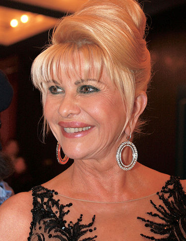
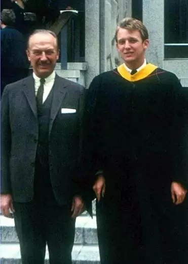
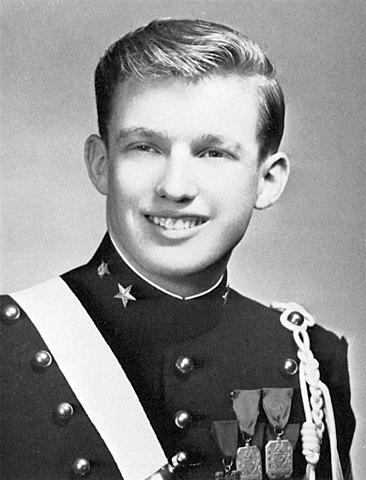

2017 - Present
Donald John Trump is currently serving as the 45th President of the United States. He assumed office in January 20, 2017.
Donald John Trump is currently serving as the 45th President of the United States. He assumed office in January 20, 2017.
In June 2015, Trump announced his candidacy for President of the United States at the Trump Tower in Manhattan. He mainly discussed illegal immigration, offshoring of American jobs, the U.S. national debt and Islamic terrorism. He kept a strong stance on these during his campaign and afterwards.
Trump eventually switched back to Republican in 2009.
Trump married Ivanka Knauss (now Trump) in 2005. In 2006 she became a US citizen. Ivanka gave birth to Barron Trump in March 20, 2006.
Trump switched to the Democratic party.
Trump's first presidential campaign.
Trump switched to Independent.
In October 1993, Donald Trump married Marla Maples after their daugther Tiffany was born in. They divorced in 1999. Tiffany stayed with her mother in California.

Trump registered as a Republican in Manhattan back in 1987.
In 1977, Trump married Ivana Ivana Zelníčková. They had three children. Donald Jr (1977), Ivanka (1981) and Eric (1984). They divorced in 1992.
Trump enrolled at Fordham University. He stayed there for two years before transfering to the Wharton School. He achieved a Bachelor of Science degree in economics.
At age 13, Trump was enrolled in the New York Military Academy, a private boarding School. He was sent to the academy for supposed lack of discipline. He finished school in 1964.
Donald John Trump was born on June 14 in New York City's Jamaica Hospital Medical Center. His father was Frederick Christ Trump (1905 - 1999), his mother was Mary Anne MacLeod (1912 - 2000).